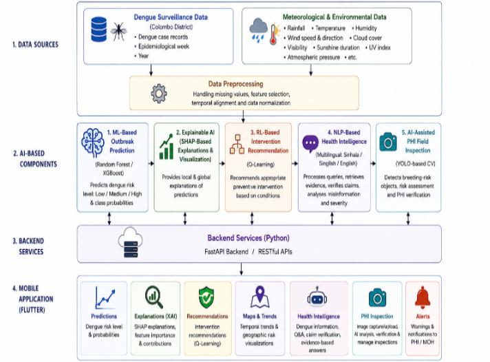
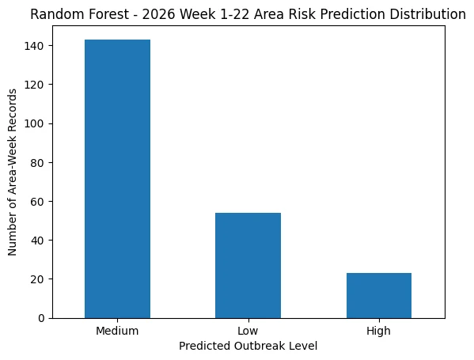
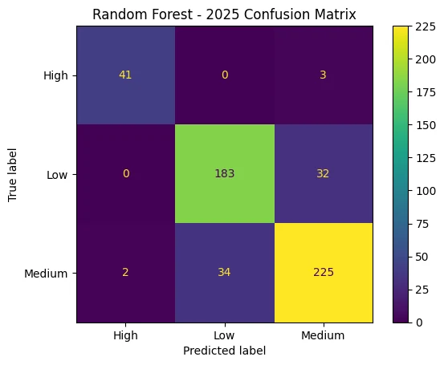

⌁
Research problem
Fragmented tools can make it difficult to translate dengue surveillance data into understandable and actionable information.
An AI-Based Dengue Outbreak Prediction and Intervention Optimization System for the Colombo District, Sri Lanka.
Dengue surveillance requires more than a forecast. Decision-makers need clear explanations, context-sensitive actions, and accessible health information.
This research investigates an integrated decision-support approach combining dengue-risk classification, feature-level explanations, reinforcement learning recommendations, and multilingual health intelligence within a mobile platform.
Discover our approach ↗Fragmented tools can make it difficult to translate dengue surveillance data into understandable and actionable information.
Existing approaches frequently address prediction, explanation, intervention, and communication as separate capabilities.
Integrate predictive, explanatory, prescriptive, and communicative AI functions into one coordinated research framework.
The platform links data-driven prediction with interpretation, intervention support, and health communication.
Random Forest / XGBoost classification of Low, Medium, and High dengue-risk levels from historical, temporal, and meteorological inputs.
SHAP explanations show which variables influence individual predictions and global model behavior.
Q-Learning maps dengue conditions and environmental context to potential public-health response recommendations.
DistilBERT-supported multilingual dengue information processing, evidence retrieval, and misinformation analysis; the paper also describes AI-assisted PHI inspection.
Historical surveillance and meteorological data are prepared, modeled, explained, and passed through backend services to a Flutter mobile interface.

Reported results reproduced from the supplied group research paper. These numbers are subject to final verification against individual thesis reports.
Reported performance in the group research paper using the stated chronological evaluation approach.
Model-generated risk categories, not confirmed outbreak observations. Source: Research Paper, Table 4.


Explore the research milestones. Dates and assessment weightings will be added when verified against official course records.
Problem identification, literature review, initial aims, and proposed research approach.
Early methodology and progress review.
Updated integration design and development progress.
Final evaluation, deliverables, and live research presentation.
Access the current research paper, proposals, and selected presentation materials. Pending documents will be attached as they become available.
Collaboration brings together complementary skills in prediction, explainability, intervention recommendations and health intelligence. These six portraits were provided for the research website; their name-to-photo mapping awaits confirmation.


Member details from the provided group research paper. Confirm final individual contributions before submission.
Dengue outbreak prediction
Intervention optimization · verify final assignment
Explainable analytics & visualization
Dengue health intelligence
Have an academic question about R26-IT-061? Send a message to our research team using this form.